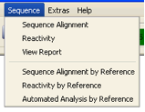
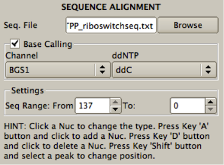
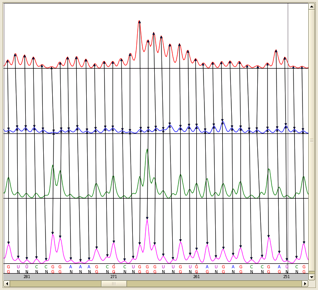
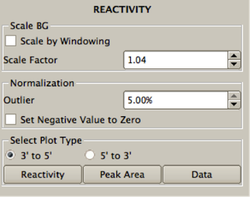
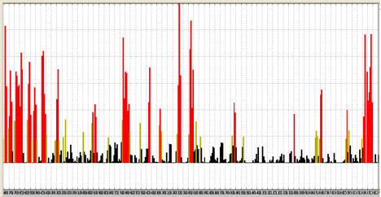
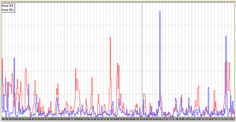
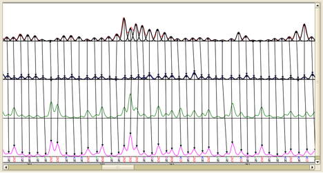
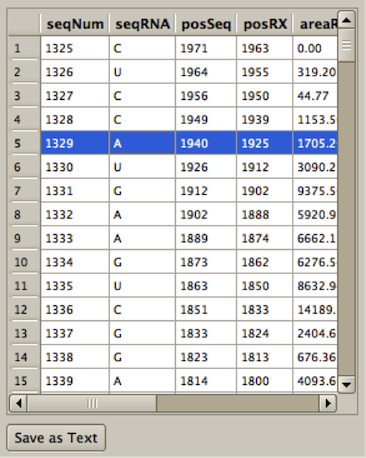
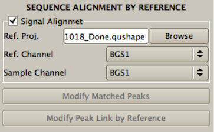
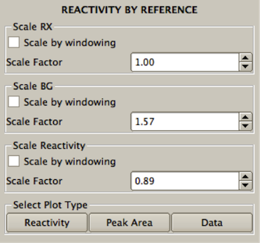

This tool performs three operations. First, it performs base calling, an operation that classifies all the peaks in the sequencing signal as either specific peaks produced by ddNTP-paired nucleotides or non-specific or background peaks corresponding to nucleotides of the other three bases. Next, the tool aligns peaks in the sequencing signal with the RNA nucleotide sequence. Finally, this tool assigns nucleotide-matched peaks in the sequencing signal to the corresponding peaks in the (+) reagent and (-) reagent signals, thus assigning each peak to its corresponding RNA position.
All three operations are performed automatically, once the Apply button is clicked, relying on the information provided by the user during the steps involved in creating the New project. This information is displayed in five boxes in the Tool Inspector window: RNA sequence file name (Seq. File); sequencing channel used for base calling and RNA alignment (Channel); dideoxynucleotide used (ddNTP); and the first and last nucleotides in the RNA sequence bracketing the studied RNA region (Seq. Range: From … To). If the user desires, default settings can be changed to new ones by selection or entry in the appropriate boxes.
Of a particular practical importance, the default approach is to match the sequencing signal against the entire RNA sequence provided in the Seq. File. If the studied RNA section is much shorter than the entire RNA sequence in the file, however, the search can take a long time. In this case, the user should narrow the search window by entering in the Seq. Range: From … To boxes the boundaries of the nucleotide sequence to be matched.

Sequence alignment is computationally intensive operation, typically taking tens of seconds to complete. During this operation, the left-bottom corner of the screen will display the “Applying…” message. Once the operation has finished, this message will change to “Applied”, and the display in the Data View window will change to a new one, in which corresponding peaks in RX, BG, and BGS traces are linked by vertical arrows. The results of base-calling and sequence alignment will be shown at the bottom of the BGS panel, with the top row showing the RNA sequence and the bottom row showing the results of base calling.
If the alignment is not accurate, the errors can be corrected manually. Four different manual correction operations are available:
(1) The base label of a peak in the BGS trace can be changed. For example, suppose that ddC was used for sequencing. Consequently, the bottom row consists of 'N' and 'G' labels. Clicking on 'N' with the mouse will turn it to 'G'. Clicking on 'G' will turn it to 'N'.
(2) An extra base can be added to the bottom row. By pressing and holding the 'A' key while clicking at a particular location in the bottom row with the mouse, an 'N' will be inserted at that location and this added nucleotide will be linked to RX and BG.
(3) A base and corresponding links can be deleted by pressing and holding the 'D' keys while clicking at a base.
(4) Computed locations of the peak centers in BG and RX can be moved by pressing the 'Shift' key and dragging the arrow to the desired location.
After modifying the sequences, press Apply to see the new alignment results with nucleotides matched to the peaks in RX and BG. Note that at this time the base calling operation will be disabled. If the user wants to perform this operation again, he/she will have to check the Base Calling box.
The Base Calling box is also important if the user wants to come back to the sequence alignment after pressing the 'Done' button and moving to other tools. In that case, the Sequence Alignment tool can be called from the Sequence menu with the base-calling operation enabled, so that upon execution of this tool the previously manually corrected base assignments will be discarded. Therefore, the Base Calling box should be unchecked if the user wants to use previously obtained base-calling results.

This tool performs three operations:
First, a whole-signal Gaussian integration is performed for all peaks in the (+) and (-) reagent signals, fitting each peak with a Gaussian function individually optimized for position, height, and width.
Next, the scaling operation scales the BG signal relative to the RX signal. This scaling is necessary because the (+) and (-) reagent primer extension reactions are performed separately and not necessarily under fully identical conditions. When the Reactivity tool is open, the scaling factor is computed automatically and is displayed in the Scale Factor window. When the Reactivity tool is executed, by clicking the Apply button, the BG signal will be scaled by this factor. If not satisfied, the user can try other scaling factor values by entering them in the Scale Factor window.
The 'Scale by Windowing' box offers another user-controlled option. As a default, the scaling factor is automatically determined for the entire BG signal, and then the entire BG signal is scaled by this factor. When working with very long signals, it may be more accurate to scale BG locally, rather than globally. To use local scaling, check the 'Scale by Windowing' box.
Finally, the normalization operation subtracts the integrated values for the (-) reagent peaks from the (+) reagent peaks, and normalizes the difference to obtain the normalized nucleotide-resolution reactivity for every RNA position. A box normalization-based algorithm is used to normalize data. This normalization scales reactivities to a scale spanning 0 to ~2, where zero indicates no reactivity and 1.0 is the average intensity for highly reactive RNA positions. Nucleotides with normalized SHAPE reactivities 0-0.4, 0.4-0.85, and >0.85 correspond to unreactive, moderately reactive, and highly reactive positions, respectively, and are plotted in different colors. As a part of the normalization procedure, the percent of outliers is determined automatically and is displayed in the Outlier window. The user can select a different percent of outliers.

There are three alternative displays of the output of the Reactivity tool:
(1) “Reactivity” button plots the normalized reactivity of each nucleotide.

(2) “Peak Area” button plots the areas of RX and BG peaks.

(3) “Data” button draws the same plot as provided through the Sequence Alignment tool (linked RX, BG, RXS, and BGS traces, as well as the nucleotide sequence), but in addition it overlays each peak in RX and BG traces with its Gaussian estimation.

The final output of QuShape data processing is a text file. This file contains information about each nucleotide including integrated (+) and (-) reagent peak areas (labeled RX and BG, respectively) and their subtracted, normalized SHAPE reactivities.
The final report of QuShape data processing is shown as a table in the Tool Inspector window. This table contains information about each nucleotide, including:

This table can be saved as a tab-delimited text file by clicking the 'Save as Text' button.
QuShape allows the results of a previous analysis to serve as a reference for subsequent analyses on the same RNA. All parameters and sequence alignment saved in a “reference” project can be used automatically in subsequent projects on the same RNA.
In particular, the Sequence Alignment by Reference tool uses signal and sequence alignments generated previously to align traces to each other and to the RNA sequence in the current project. The name of the reference file must be entered as a part of step 2 of creating the New Project (see above: New Project, step 2). Alternatively, the name of the reference file can be entered in the Tool Inspector window opened with the Sequence Alignment by Reference tool by browsing Ref. Proj.
Default channels in the reference and current ('sample') projects that will be aligned are shown in the Ref. Channel and Sample Channel boxes. The user can change these if needed.
Clicking the Apply button will execute the alignment procedure and the outcome will be displayed in the same format as after execution of the Sequence Alignment tool (showing all four traces, with corresponding peaks linked by vertical lines, and displaying the RNA sequence at the bottom). In addition, the reference traces will be drawn (with light lines) superimposed on the current project traces for comparison.
If there is any problem with the alignment, press the 'Modify Matched Peaks' button to correct signal alignment manually. When this button is pressed, the selected reference channel (e.g. Ref: BGS1) and sample channel (e.g. Sample: BGS1) will be plotted with matched peaks. The matched peaks can then be modified using the same operations described in the section on the Signal Alignment tool.
If the alignment between the two projects is accurate, but the sample peak has been linked with the incorrect reference peak, press the 'Modify Peak Link by Reference' button. When this button is pressed, the selected “RX Reference” channel will be plotted with the “RX Sample”, and the “BG Reference” channel plotted with the “BG Sample”. The peak link can then be modified for the Sample channels using the same operations described in the section on the Signal Alignment tool.
If, while using the Sequence Alignment by Reference tool, a local error is found in the reference trace that requires a peak “added” or “deleted”, the current sample project can be fixed easily. Press the Done button and use the pull-down Sequence menu in the menu bar at the top of the screen to select Sequence Alignment. Uncheck the Base Calling box before pressing the Apply button and the missing or extraneous peak can be added or deleted using the same operations described in the section on the Sequence Alignment tool.

This tool fits Gaussian functions to each peak in the RX and BG traces and computes their areas. Sample RX and BG are then scaled to Reference RX and BG. Reactivity for each nucleotide is computed by subtracting BG from RX and then normalizing, as described in the section on the Reactivity tool. The normalized reactivity can be scaled to the Reference normalized reactivity so that they accurately match the reference data.
If the sample project used the Sequence Alignment by Reference tool, this is the default option. However, if the user desires, the Reactivity tool can be used by selecting it from the pull-down Sequence menu bar. For example, if there are large SHAPE reactivity differences between the reference and sample traces (such as using very different conditions, like denatured or Mg), it is better to use the usual Reactivity tool.
